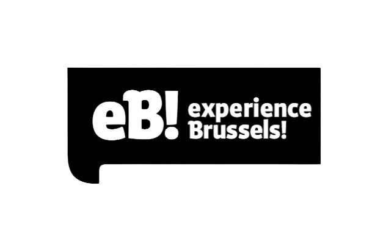
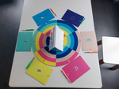

{kind=link}
Bruxelles l’Internationale : Cette salle interactive vous développe l’histoire de Bruxelles capitale européenne, vous y découvrirai son histoire sous une forme de quizz. Vous comprendrez mieux la place prépondérante qu’elle y occupe, son implication dans le processus de formation de cette union politico-économique. Rassurez-vous, pas de cours d’histoire ici mais simplement des informations que vous glanerez lors des divers jeux proposés par le musée.
Attardons-nous un peu sur l’exposition : « Bruxelles Expérience. », une des expositions permanentes de notre quartier des musées :

Cette exposition interactive vous fera parcourir Bruxelles, son histoire ainsi que ses différents aspects qui en font une ville vivante, changeante et multiculturelle. Dans cet superbe maison, appelée : « Maison de la Région », vestige de l’occupation française, des salles thématiques vous accueillerons telles que la salle dite de la maquette, la salle de Bruxelles l’internationale, la salle des Regards Croisés, …
Je vais ici vous en présenter plus en détails deux de celles-ci qui nous ont particulièrement séduits :
{kind=link}
La salle de la maquette : Ici vous verrez, une maquette de notre Bruxelles, en relief, à l’échelle 1 :1500. Complètement animée, vous pourrez y voir via diverses animations, la géographie, son réseau de transports fraichement agrandi, les bâtiments les plus connus de notre capitale, … Vous la verrez sous un autre angle, de ce point de vue vous pourrez la contempler dans son ensemble. Elle vous paraitra plus proche que jamais !
Le petit mot de la rédac’, c’est par ici
{kind=link}
Avec l’équipe, nous avons participé à l’EB ! quiz. Le jeu se résumait à une grande partie de Trivial Pursuit basé sur Bruxelles, son histoire, sa culture. Alors que certaines questions relevaient de culture générale, certains indices étaient parsemés dans les différentes salles d’exposition et permettaient aux équipes d’amasser des points. Pour un groupe de personnes de différents backgrounds, de différents horizons, de se retrouver dans cette formation, l’expérience peut être intimidante. Nous sommes arrivés à l’exposition un peu perdus, sans repère. Cependant l’opportunité de se réunir, jouer de nos forces dans un même objectif et nous mettre à l’épreuve, a permis de briser la glace et tisser des liens entre ceux qui étaient, quelques heures auparavant, des inconnus. Alors que certains étaient plus rapides à pêcher les informations nécessaires de salle en salle, d’autres utilisaient leur culture de la ville pour faire avancer les autres, chacun pouvait amener son grain de sel et participer à l’équipe. Les affinités qui s’y sont créées ont été fondatrices des valeurs qui constituent aujourd’hui notre esprit de groupe, la solidarité, la bienveillance, l’encouragement. Bien que le sujet de l’exposition n’avait pas éveillé de grandes attentes à mon égard, découvrir ces personnes et apprendre à travailler ensemble m’a appris bien plus que je ne le pensais. Et pour cela, je suis reconnaissant d’avoir pu participer à une telle journée et j’en garderai longtemps un souvenir chaleureux.